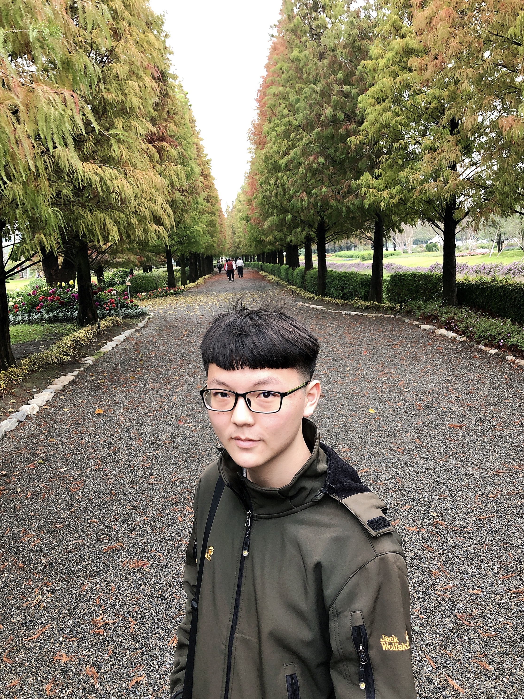
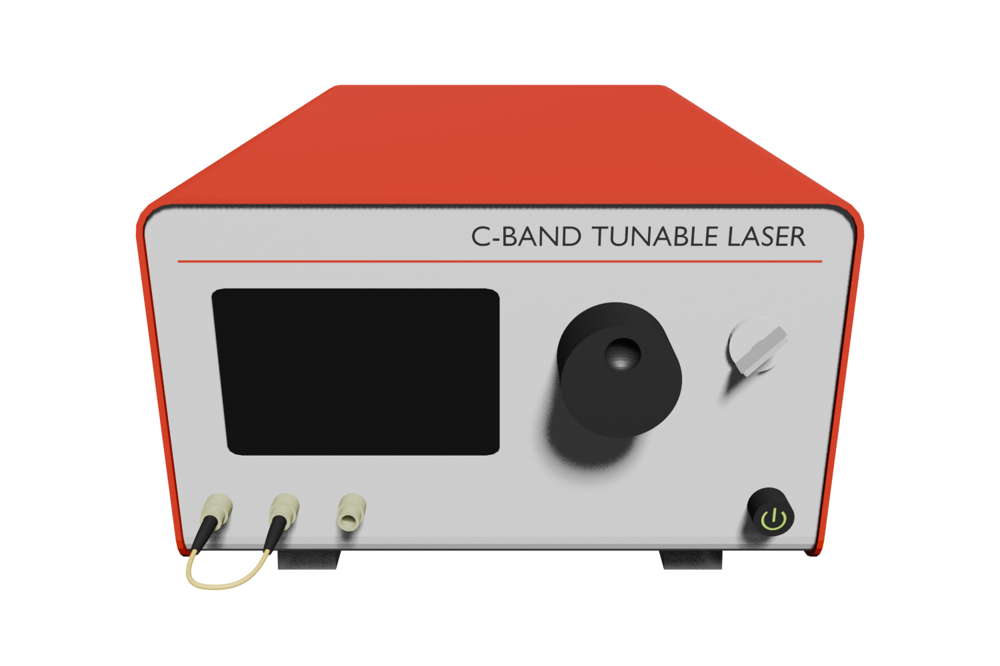

Metalens Principle
超穎透鏡由一個個次波長奈米柱結構組成陣列，每一個奈米柱調控局部相位，藉由空間相位梯度改變出射光的波前，使入射光在指定位置聚焦。 相較傳統曲面透鏡，超穎透鏡具有微型化、易與其他奈米元件整合的優勢。
研究高 NA 超穎透鏡之 metagrating 設計與基因演算法最佳化，熟悉 Lumerical FDTD、Python 與 MATLAB， 並具備半導體製程、光電量測與數據分析經驗。希望建立從元件設計、模擬、製程到量測的完整開發能力。



超穎透鏡由一個個次波長奈米柱結構組成陣列，每一個奈米柱調控局部相位，藉由空間相位梯度改變出射光的波前，使入射光在指定位置聚焦。 相較傳統曲面透鏡，超穎透鏡具有微型化、易與其他奈米元件整合的優勢。
依局部繞射條件將透鏡劃分為一圈圈環帶，每一圈配置對應的 unit-cell 結構。
使用 Python 撰寫 Genetic Algorithm，將物種演化、物競天擇的方式應用於超穎透鏡， 最佳化奈米柱直徑、間距與相關幾何參數，再以 Lumerical FDTD 評估繞射與聚焦性能，建立自動化迭代最佳化流程。

可自行操作 TSRI、奈米中心多項製程機台，並具備光學、電性與頻率響應等元件量測經驗。
使用 Blender 繪製 3D 量測儀器與完整實驗架構，用於研究簡報、量測架構視覺化與儀器配置說明。
